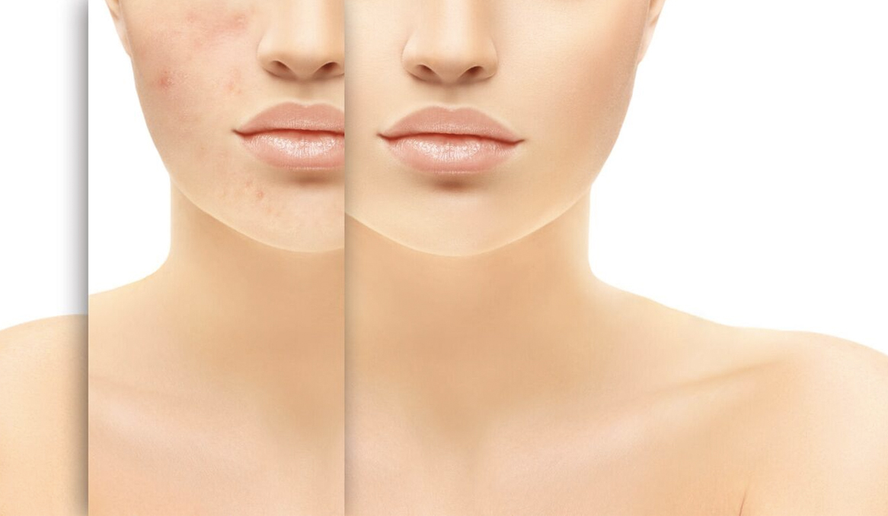
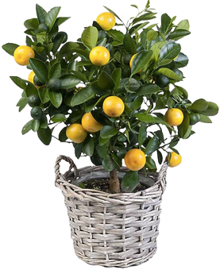
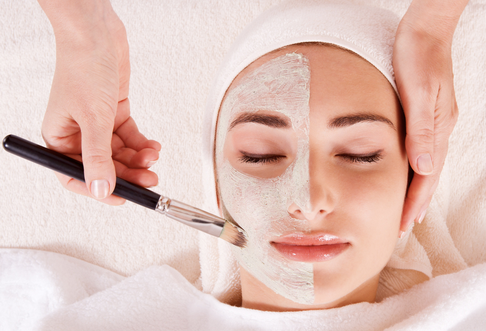
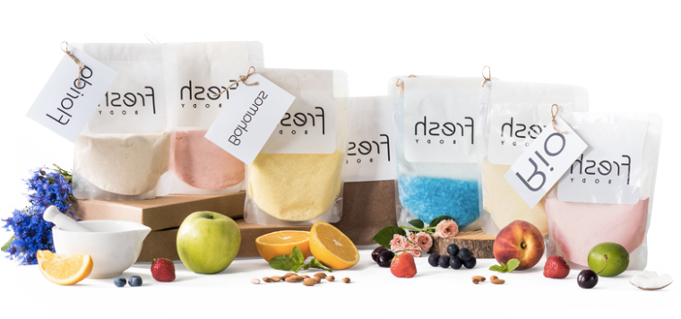

- Наши специалисты не просто назначают и проводят лечение, они ведут пациента от проблемы к ее решению и помогают удержать полученный результат. Индивидуально разрабатывается программа процедур, подбираются препараты, также специалист рекомендует домашний уход и готовит лечебный крем для сохранения эффекта.
- Пациенты Центра «Весна» не выпадают из жизни во время удаление постакне. Им не приходится прятаться дома, пока лицо не восстановится после агрессивных процедур. Лечение легко можно вписать в любой график.
- Программа процедур, каждый препарат и компонент подобран специалистом под конкретного пациента. Такой подход существенно повышает эффективность и сокращает сроки лечения.
- В отличие от большинства альтернативных методик добиться кардинального изменения внешнего вида кожи (удалить рубцы и шрамы постакне, выровнять рельеф и тон кожи) удается максимально комфортное.

Лечение постакне
Не предлагаем временных решений. Мы избавляем от проблем. Мы не заставляем вас терпеть боль и неудобства. Просто шаг за шагом изменяем вашу кожу и жизнь к лучшему
Устраняем последствия постакне
Еще в Древнем Египте, Греции и Риме женщины использовали маски для лица, чтобы сохранить свою молодость и красоту. Женщины всегда стремились придать коже лица нежный цвет и загадочное сияние. У каждой женщины были свои тайные рецепты. Главный же секрет красоты – это королевский бархат вашей кожи лица и тела.
О красоте египетской царицы Клеопатры ходят легенды. Она вошла в историю не только как могущественная царица Египта, но и как символ женственности, очарования, красоты.
Как свидетельствует история, Клеопатра любила делать маски для лица и выполняла этот ритуал постоянно. Ее излюбленными ингридиентами были душистый александрийский мед, жирное молоко козлиц и ослиц (не только улучшало состояние кожи, но и служило профилактикой от инфекционных заболеваний), белая глина-каолин, грязи Мертвого моря (специально завоеванного для возлюбленной Марком Антонием).

Забудьте о толстом слое тонального крема, Забудьте о толстом слое тонального крема, не позволяйте акне отравлять вашу жизнь, перестаньте думать о недостатках кожи. Просто начните двигаться к здоровой и красивой коже, отбросив все, что не работает, используя только те средства, которые эффективны именно в вашем случае.
Преимущества авторской методики удаления постакне на лице
Нет смысла рисковать – ведь речь идет о вашем лице – когда есть доступный комфортный метод лечения с доказанной эффективностью.

Когда я смогу получить результат?
Еще в Древнем Египте, Греции и Риме женщины использовали маски для лица, чтобы сохранить свою молодость и красоту. Женщины всегда стремились придать коже лица нежный цвет и загадочное сияние. У каждой женщины были свои тайные рецепты. Главный же секрет красоты – это королевский бархат вашей кожи лица и тела.
тобы поддерживать кожу здоровой и не вспоминать об угрях, нужно продолжать о ней правильно заботиться: соблюдать правила ухода и применять лечебный крем. Этот крем специалисты Центра создают с учетом всех особенностей кожи пациента, поэтому он демонстрирует действительно высокую эффективность.
Цены на лечение постакне
- Лечение постакне 350 грн
- Лечение постакне 350 грн
- Лечение постакне 350 грн
- Наши специалисты не просто назначают и проводят лечение, они ведут пациента от проблемы к ее решению и помогают удержать полученный результат. Индивидуально разрабатывается программа процедур, подбираются препараты, также специалист рекомендует домашний уход и готовит лечебный крем для сохранения эффекта.
- Пациенты Центра «Весна» не выпадают из жизни во время удаление постакне. Им не приходится прятаться дома, пока лицо не восстановится после агрессивных процедур. Лечение легко можно вписать в любой график.
- Программа процедур, каждый препарат и компонент подобран специалистом под конкретного пациента. Такой подход существенно повышает эффективность и сокращает сроки лечения.
- В отличие от большинства альтернативных методик добиться кардинального изменения внешнего вида кожи (удалить рубцы и шрамы постакне, выровнять рельеф и тон кожи) удается максимально комфортное.
Альтернативы в лечении постакне, как выбрать оптимальную методику?
Как добиться устойчивого результата в лечение угревой болезни?
Еще в Древнем Египте, Греции и Риме женщины использовали маски для лица, чтобы сохранить свою молодость и красоту. Женщины всегда стремились придать коже лица нежный цвет и загадочное сияние. У каждой женщины были свои тайные рецепты. Главный же секрет красоты – это королевский бархат вашей кожи лица и тела.
тобы поддерживать кожу здоровой и не вспоминать об угрях, нужно продолжать о ней правильно заботиться: соблюдать правила ухода и применять лечебный крем. Этот крем специалисты Центра создают с учетом всех особенностей кожи пациента, поэтому он демонстрирует действительно высокую эффективность.

Еще в Древнем Египте, Греции и Риме женщины использовали маски для лица, чтобы сохранить свою молодость и красоту. Женщины всегда стремились придать коже лица нежный цвет и загадочное сияние. У каждой женщины были свои тайные рецепты. Главный же секрет красоты – это королевский бархат вашей кожи лица и тела.
тобы поддерживать кожу здоровой и не вспоминать об угрях, нужно продолжать о ней правильно заботиться: соблюдать правила ухода и применять лечебный крем. Этот крем специалисты Центра создают с учетом всех особенностей кожи пациента, поэтому он демонстрирует действительно высокую эффективность.
Как избежать появление постакне?
В Центре здоровой кожи «Весна» мы всегда предлагаем комфортный и безопасный путь к красоте кожи! Воспользуйтесь всеми возможностями нашей методики, которая доказала свою эффективность и становится решением проблемы постакне для более 250 пациентов ежегодно!